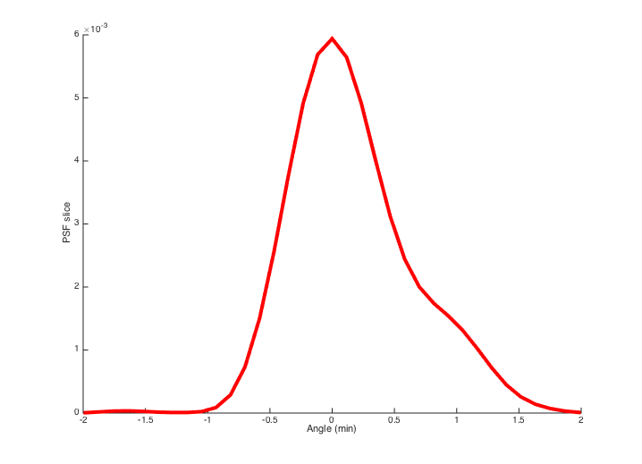
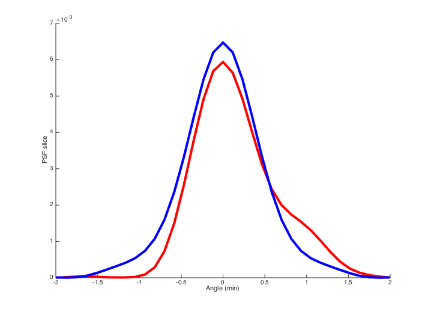

Contents
function varargout = v_wvfStilesCrawford(varargin)
varargout = UnitTest.runValidationRun(@ValidationFunction, nargout, varargin);
end
Function implementing the isetbio validation code
function ValidationFunction(runTimeParams)
Initialize ISETBIO
close all; ieInit;
Some informative text
UnitTest.validationRecord('SIMPLE_MESSAGE', 'Validate wavefront Stiles-Crawford Effect code.');
For plotting limits
maxMIN = 2;
maxMM = 1;
waveIdx = 1;
theWavelength = 550;
Set up wvf structure and sce structure
wvf = wvfCreate;
wvf = wvfSet(wvf,'zcoeffs',[0.2 0.75],{'defocus', 'oblique_astigmatism'});
sceP = sceCreate(theWavelength,'berendschot_data','centered');
UnitTest.validationData('wvf', wvf);
UnitTest.validationData('sceP', sceP);
No Stiles Crawford effect
wvf = wvfSet(wvf,'sce params',[]);
wvf = wvfComputePSF(wvf);
sce1DFig2 = vcNewGraphWin; hold on
wvfPlot(wvf,'1d psf angle','min',[],maxMIN,'no window');
UnitTest.validationData('wvfNoSCE', wvf);

Include the SCE in place
wvf = wvfSet(wvf,'sce params',sceP);
wvf = wvfComputePSF(wvf);
[f,p] = wvfPlot(wvf,'1d psf angle','min',[],maxMIN,'no window');
set(p,'color','b')
hold on
UnitTest.validationData('wvfWithSCE', wvf);

end